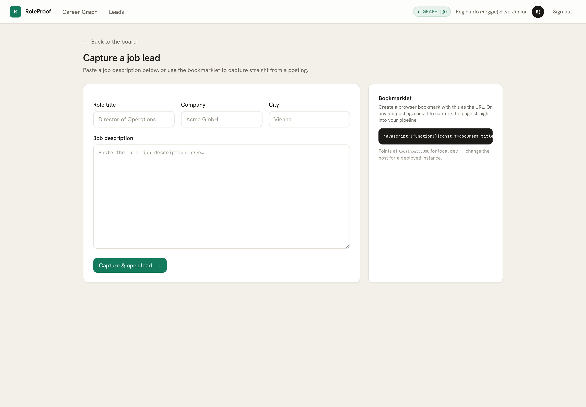
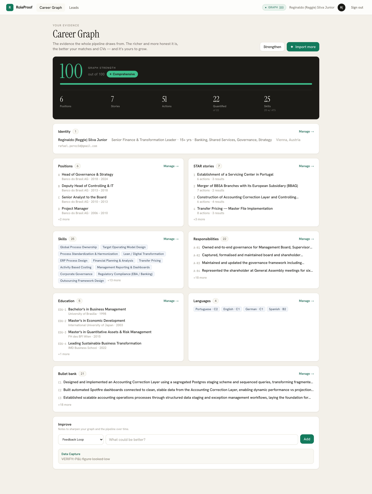
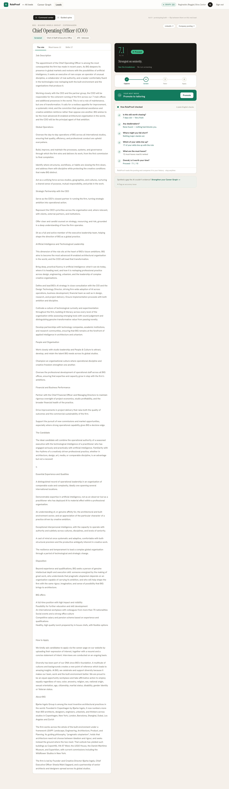
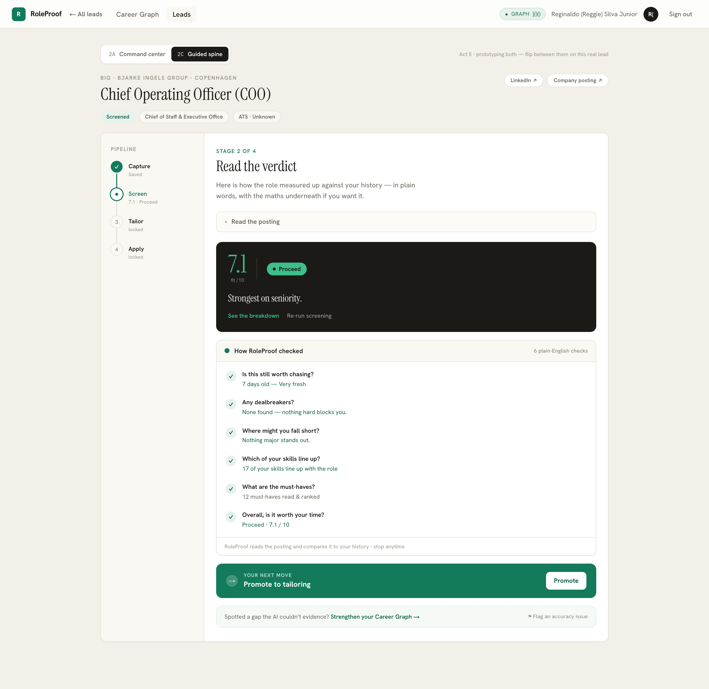
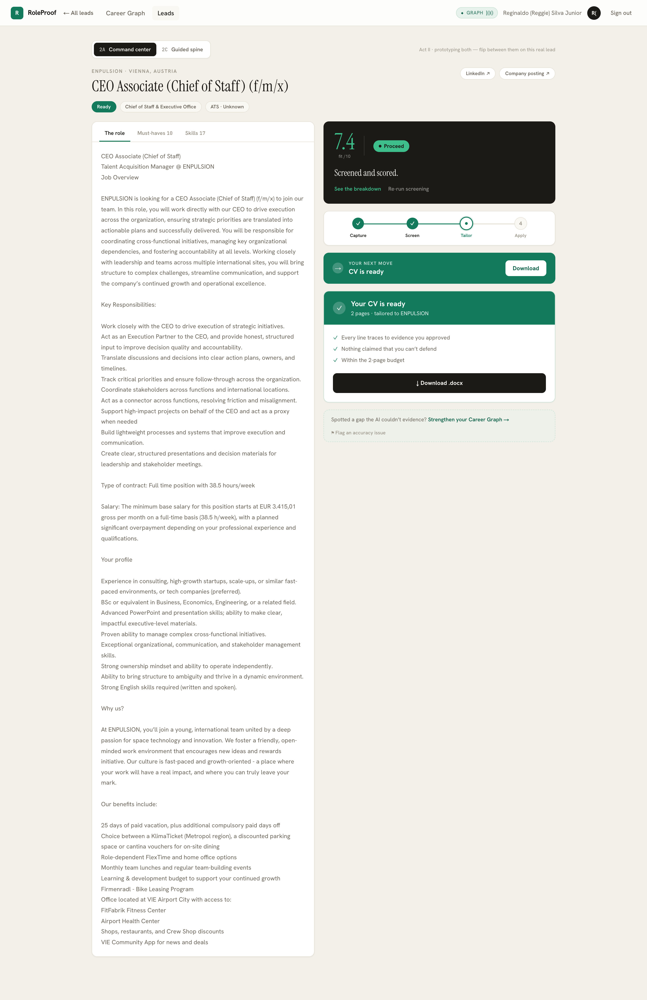

Current prototype, compared to the manual roots
This is a separate assessment of the RoleProof prototype as it exists now, compared with the original SharePoint, Excel, Obsidian and Claude workflow. It focuses on what is present, what is missing, what may confuse you during use, and the practical refactor paths from here.
Executive Verdict
The prototype has preserved the most important part of the manual process: a staged, gated journey from lead capture to screening, evidence review and CV output. The board, lead workspace, Career Graph and human Keep/Maybe/Drop gate are coherent and usable.
The main gap is fidelity, not architecture. Screening is relatively close to the documented process because
B2-B6 load the process notes and B6 scoring is deterministic in code. Tailoring is much thinner: C2 uses
token overlap, C3 mostly reuses existing bullet text, C5 is templated text, C6 generates a generic document,
and C7 is a simple coverage metric. The first refactor pass materially improves that: C2/C3/C5/C7 now
have live structured LLM paths and C6 has a real-template renderer. The remaining fidelity gap is now about
scoping, validation, approval integrity and template completeness rather than missing step plumbing.
Refactor Pass Review
Reviewed latest commit 30308ef ("DeepSeek live mode + full tailoring core + real-template CV + CI loop + D-phase")
plus the current working tree. Typecheck and production build are green.
Closed or materially improved
No visible mock/live indicator.Header now shows LIVE/MOCK.Bookmarklet host hardcoded to localhost.It now derives the request origin.C2-C7 Process notes not registered.C2/C3/C5/C7 are now inlib/prompts.ts.C2 only token overlap.C2 now has a live LLM path over the evidence graph.C3/C5/C7 were mock/code only.They now call the structured LLM wrapper in live mode.C6 only programmatic DOCX.A real-template docxtemplater path now exists.D-phase entirely absent.There is now a mark-applied scaffold.Owner scoping incomplete in B/C pipeline paths.Screening, tailoring, CI guidance, run logs, LLM logs, CV downloads and application actions are now owner-scoped.Bookmarklet attribution depended on cookies./roleproof/capturenow generates a signed 30-day capture token for/api/ingest.Real-template slots could use unapproved fallback evidence.C6 now fills template slots only from Keep evidence.cvPositionwas free text.Dual workspace variants looked equally final.Guided spine now carries analternative previewbadge.Step trace required a separate expert mode.Run trace is now folded into the normal workspace panels.
Still needs attention
- C4 still groups by proficiency, not methodology categories.
- C5 profile and C4 skills are not inserted into the real template.
- CI tips now feed prompts, but the CI initiative dashboard is still missing.
- B3 still lacks explicit Values & Motives context injection.
- Live C2/C3/C5/C7 still need calibration against manual golden examples.
- No visual PDF/render check exists before CV download.
Code review findings
| Severity | Finding | Why it matters |
|---|---|---|
| High | lib/pipeline/tailoring.ts:53-120, 191-300, lib/ci.ts:15-26 |
ownerId through the pipeline and scope every read/write with it.pipeline_runs, llm_calls, CV variants, CI guidance and CV downloads are owner-scoped.
|
| High | app/api/ingest/route.ts and bookmarklet fetch behavior |
fetch() from LinkedIn will not include app cookies by default.
That means currentOwnerId() can fall back to the demo owner, so captured leads may land under the wrong account.
Reviewer comment: use an authenticated capture token or include credentials with a non-wildcard CORS policy./roleproof/capture generates a signed capture token and /api/ingest rejects requests without it.
|
| High | lib/pipeline/tailoring.ts:89-96 |
|
| Medium | lib/anthropic/schemas.ts:C2 and lib/pipeline/tailoring.ts:145-163 |
cvPosition is free text. If the model returns an invalid label, the approved bullet can silently miss every
real-template slot.
Reviewer comment: make cvPosition an enum of CV_SLOTS or normalize and validate before insert.CV_SLOTS enum and the pipeline normalizes short codes before insert.
|
| Medium | app/actions/monitoring.ts:13-24 |
ready to applied. |
Current App Screenshots
These screenshots were captured from the local app on 30 June 2026 and stored in
docs/reports/img/. They are now treated as the pre-refactor visual baseline; the captions and
reviewer notes call out where the latest commit changed behavior after these images were taken.
Click any image to open the full PNG.

{kind=link}

/roleproof/capture; bookmarklet now includes a signed owner capture token.{kind=link}

{kind=link}

{kind=link}

alternative preview while both layouts remain available.{kind=link}

Manual Roots vs Current Prototype
| Manual process | Current app | Assessment |
|---|---|---|
| LinkedIn bookmarklet sends JD to Power Automate, SharePoint, Obsidian and Excel. | /leads/new/roleproof/capture and signed-token /api/ingest create a lead and store raw JD text. |
Improved Origin is generated dynamically and capture attribution no longer depends on app cookies. |
Job Hunting Lists.xlsx is the operational record. |
Postgres tables hold leads, requirements, tailoring rows, tips and runs. | Good The app has the right persistence direction. |
Obsidian Process/*.md files drive each Claude step. |
lib/prompts.ts; C2-C7 are not. |
Partial Much better. C1/C4/C6 remain code-owned, which is acceptable if documented; B3 still lacks Values & Motives context. |
| B6 uses Opus judgment plus deterministic rollup. | lib/scoring.ts owns the weights, match bands and recommendation thresholds. |
Strong This is one of the best preserved parts of the original method. |
| C2 maps requirements to exact evidence, then the candidate marks Keep/Maybe/Drop. | Partial Good direction. cvPosition. |
|
| CV is compiled into the real Word template with role/position placement. | Partial Major improvement, but not closed: C5 profile/C4 skills are not inserted. |
|
| Continuous Improvement dashboard tracks initiatives and tips. | Accuracy tips exist; C2 gaps now create tips and unresolved tips feed prompts. ci_initiatives are still not surfaced in the current UI. |
Partial Feedback loop improved. The operating dashboard/backlog view is still missing. |
| Profile workbook is maintained by hand. | Career Graph, onboarding import and coaching enrich the evidence store. | Added This is a meaningful product expansion beyond the original workflow. |
| D-phase tracks applications and target companies. | applications table is unused.applied. |
Scaffold Useful first pass. |
What Is Missing
Methodology fidelity
- B3 does not inject the mandatory Values & Motives context.
C2-C7 process notes are not registered as runtime prompts.C2/C3/C5/C7 are now registered. C1/C4/C6 remain code-owned.C2 evidence mapping is token overlap, not Sonnet reasoning over the full Career Graph.Live C2 now uses LLM mapping over broader owner-scoped evidence with validated CV slots.C3 does not transform evidence into polished ATS bullets yet.Live C3 now rewrites Keep evidence. Needs live-output calibration against manual examples.- C4 lacks the intended 3-5 skill categories because
skill_categoryis not modeled. C5 is template text rather than a real tailored profile generation step.Live C5 exists, but the real-template DOCX currently does not insert that profile text.C7 rating is not an Opus assessment.Live C7 exists and stores the report output inpipeline_runs; rich lead-level persistence is still missing.- Real-template C6 fills only the 11 Professional Experience placeholders; profile and skills are not filled into the Word output.
Unapproved fallback evidence can still enter empty real-template slots.C6 now leaves empty slots blank unless supported by Keep evidence.- B7 summary and cover-letter generation are absent.
Product and operations
- No active CI dashboard view for the seeded initiatives, cost panel and process backlog.
No in-app indication ofHeader badge added.LLM_MODE=mockversus live.No expert trace view showing step IDs, prompt source and model.Compact trace disclosures are now folded into the regular workspace. Evidence refs are visible in triage; raw output JSON remains hidden.No deployment-aware bookmarklet generator.Origin-aware, signed-token bookmarklet added.No application log.Mark-applied scaffold added. Follow-up tracker, outcome UI and target-company monitoring remain.New live/deep pipeline reads and writes are not consistently scoped toMain B/C, CI and D paths are now owner-scoped. Keep auditing new surfaces as they are added.currentOwnerId().- No robust e2e tests beyond verifier scripts.
- No visual CV preview/PDF render check before download.
What Is Confusing
Historical repo context can remain, but active docs and UI should continue using RoleProof.
Canonical path: /roleproof, /roleproof/capture, /roleproof/leads/[id].
The internal enum can stay green|yellow|red, but user-facing docs and UI should keep saying Keep/Maybe/Drop.
alternative preview.Both still exist, but the badge makes it clear the preferred system is not decided yet.
Next refinement: expose token/cost totals and raw output only where useful.
Run trace shows step IDs, mode/model, prompt source and timestamp. Remaining gap: richer per-requirement rationale/output JSON on demand.
What Can Be Better
Done in the header and expanded through per-run workspace trace.
Interim decision: keep both and mark the guided spine as alternative preview.
Current README, architecture, pipeline and Process notes now align to RoleProof routes and Keep/Maybe/Drop.
Implemented first pass: trace disclosures show step IDs, mode/model, prompt source and timestamp. Remaining: structured output JSON/rationale views.
Use existing getDashboardData() data to show CI initiatives, tips, usage, score buckets and stale leads.
C2/C3/C5/C7 now have live prompt-driven, owner-scoped paths with trace. Next: calibrate against manual outputs.
Real-template path exists and no longer uses unapproved fallbacks. Next: insert/handle profile and skills correctly and add a render/preview check.
Recommended Paths Forward
Faithfulness First
Best if your goal is to trust the app as a replacement for your manual process.
Fix owner scoping across C2-C7, CI guidance, CV variants and applications.- Wire B3 values context.
Register C2-C7 prompts and schemas.Calibrate C2/C3/C5/C7 live outputs against manual examples.- Run live LLM tests on 3-5 known leads.
Add expert trace surfaces.First pass folded into regular panels; add deeper rationale/output drawers next.Move to the real CV template.Finish profile/skills fidelity and render preview.
Product First
Best if the goal is to show a polished SaaS journey quickly.
Consolidate RoleProof branding.Continue cleaning historical-only docs over time.- Keep guided onboarding front and center.
- Deploy with Supabase Auth and RLS.
Harden bookmarklet auth attribution before multi-user deploy.Signed capture token added.Add application tracking.Expand the scaffold into outcome/follow-up tracking.Keep mock C-tailoring explicit.Header badge and per-run trace added.
Full Refactor
Only worth it if live prompt wiring still cannot reach manual quality.
- Make
pipeline_runsthe UI source of truth. - Build a step registry mirroring
Process/. - Use graph search/RAG for evidence retrieval.
- Unify board/workspace/apply flow.
- Consider Camunda runtime only after the process stabilizes.
Prioritized Next Steps
Fix data isolation first:Main B/C/CI/D paths are owner-scoped; keep auditing any new surface before deploy.Fix bookmarklet identity:Signed capture token implemented on/roleproof/captureand/api/ingest.Protect the human gate:C6 no longer fills unapproved fallbacks andcvPositionis validated against the real slot list.Protect orientation:RoleProof routes, Keep/Maybe/Drop vocabulary, LIVE/MOCK badge, alternative-preview badge and workspace trace are in place.- Close the screening gap: inject Values & Motives into B3 and verify B1-B6 against hand-calculated examples.
- Calibrate live tailoring: compare C2/C3/C5/C7 output against existing manual C-step rows and tune prompts/schemas.
- Finish CV fidelity: decide how profile/skills enter the real template, group bullets by role/position, and add a document render check.
- Recover operations: restore CI initiatives/tips/usage/application backlog into RoleProof-native surfaces.
- Deepen trust surfaces: add per-requirement rationale, output JSON and token/cost detail where helpful.
- Then deploy: Supabase Auth/RLS, storage validation and a concise demo script.
Files Created For This Report
This report intentionally lives outside the existing phase reports and does not overwrite
docs/phases/roots-review.html.